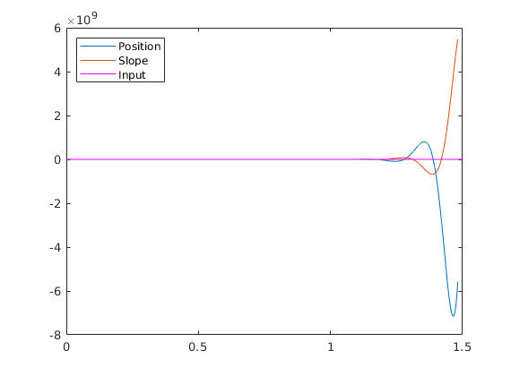
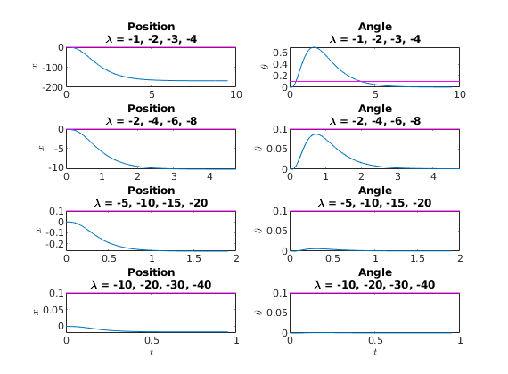

Part 1
Contents
1.a
g = 9.81;
mp = 0.230;
l = 0.6413;
r = l/2;
J = (1/3)*mp*l^2;
y = 0.0024;
mc = 0.38;
c = 0.90;
Mhat = mp + mc;
Jhat = J + mp*r^2;
mu = mp^2 * r^2 - Jhat^2 * Mhat^2;
A = [0 0 1 0;
0 0 0 1;
0, g/mu, (Jhat*c)/mu, -(y*mp*r)/mu;
0, -(Mhat*mp*r*g)/mu, -(mp*r*c)/mu, (Mhat*y)/mu]
B = [0; 0; -Jhat/mu; -(mp*r)/mu]
C = [1 0 0 0; 0 1 0 0]
D = [0; 0]
A =
1.0e+03 *
0 0 0.0010 0
0 0 0 0.0010
0 2.2782 0.0115 -0.0000
0 -0.1025 -0.0154 0.0003
B =
0
0
-12.8140
-17.1268
C =
1 0 0 0
0 1 0 0
D =
0
0
1.b
sys = ss(A, B, C, D)
eig(A)
opt = stepDataOptions('StepAmplitude', 0.1)
[y, t, x] = step(sys, opt);
figure(1); clf;
plot(t, y)
hline = refline(0, 0.1)
hline.Color = 'm'
legend("Position", "Slope", "Input", 'Location', 'Northwest')
saveas(gca, 'ES155Lab2_1b_step.jpg')
sys =
A =
x1 x2 x3 x4
x1 0 0 1 0
x2 0 0 0 1
x3 0 2278 11.53 -0.0411
x4 0 -102.5 -15.41 0.34
B =
u1
x1 0
x2 0
x3 -12.81
x4 -17.13
C =
x1 x2 x3 x4
y1 1 0 0 0
y2 0 1 0 0
D =
u1
y1 0
y2 0
Continuous-time state-space model.
ans =
0.0000 + 0.0000i
19.8901 +28.6414i
19.8901 -28.6414i
-27.9076 + 0.0000i
opt =
step with properties:
InputOffset: 0
StepAmplitude: 0.1000
hline =
Line with properties:
Color: [0 0.4470 0.7410]
LineStyle: '-'
LineWidth: 0.5000
Marker: 'none'
MarkerSize: 6
MarkerFaceColor: 'none'
XData: [0 1.5000]
YData: [0.1000 0.1000]
ZData: [1×0 double]
Use GET to show all properties
hline =
Line with properties:
Color: [1 0 1]
LineStyle: '-'
LineWidth: 0.5000
Marker: 'none'
MarkerSize: 6
MarkerFaceColor: 'none'
XData: [0 1.5000]
YData: [0.1000 0.1000]
ZData: [1×0 double]
Use GET to show all properties

1.c
figure(2); clf;
plotCount = 1;
pMultipliers = [1, 2, 5, 10]
for i = 1:length(pMultipliers)
p = [-1, -2, -3, -4];
p = p.*pMultipliers(i)
K = place(A, B, p)
sys = ss(A- B*K, B, C, 0);
opt = stepDataOptions('StepAmplitude', 0.1);
[y, t, x] = step(sys, opt);
titles = ["Position"; "Angle"];
ylabels = ["$x$", "$\theta$"]
for j = 1:2
subplotIdx = plotCount + j -1
subplot(length(pMultipliers),2, subplotIdx)
plot(t, y(:,j))
hline = refline(0, 0.1);
hline.Color = 'm';
title({char(titles(j)), ['\lambda = ', num2str(p(1)), ', ', num2str(p(2)), ', ', num2str(p(3)), ', ', num2str(p(4))]})
ylabel(char(ylabels(j)), 'Interpreter', 'latex')
end
plotCount = plotCount + 2;
end
subplot(length(pMultipliers), 2, plotCount - 2)
xlabel('$t$', 'Interpreter', 'latex')
subplot(length(pMultipliers), 2, plotCount - 1)
xlabel('$t$', 'Interpreter', 'latex')
pMultipliers =
1 2 5 10
p =
-1 -2 -3 -4
K =
-0.0006 -33.9358 0.5078 -1.6570
ylabels =
1×2 string array
"$x$" "$\theta$"
subplotIdx =
1
subplotIdx =
2
p =
-2 -4 -6 -8
K =
-0.0095 -50.6099 0.3358 -2.1122
ylabels =
1×2 string array
"$x$" "$\theta$"
subplotIdx =
3
subplotIdx =
4
p =
-5 -10 -15 -20
K =
-0.3719 -119.7142 -0.4862 -3.2488
ylabels =
1×2 string array
"$x$" "$\theta$"
subplotIdx =
5
subplotIdx =
6
p =
-10 -20 -30 -40
K =
-5.9507 -289.5229 -3.2349 -4.1117
ylabels =
1×2 string array
"$x$" "$\theta$"
subplotIdx =
7
subplotIdx =
8
